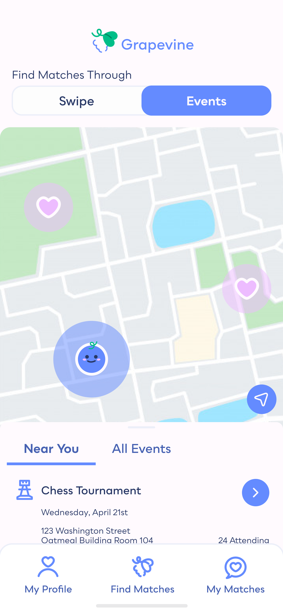
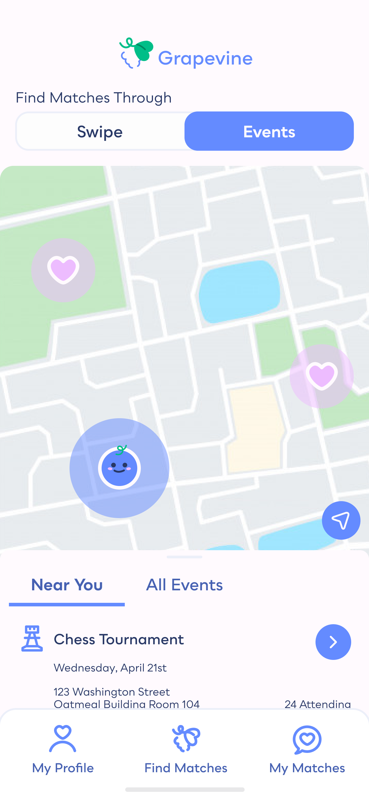
 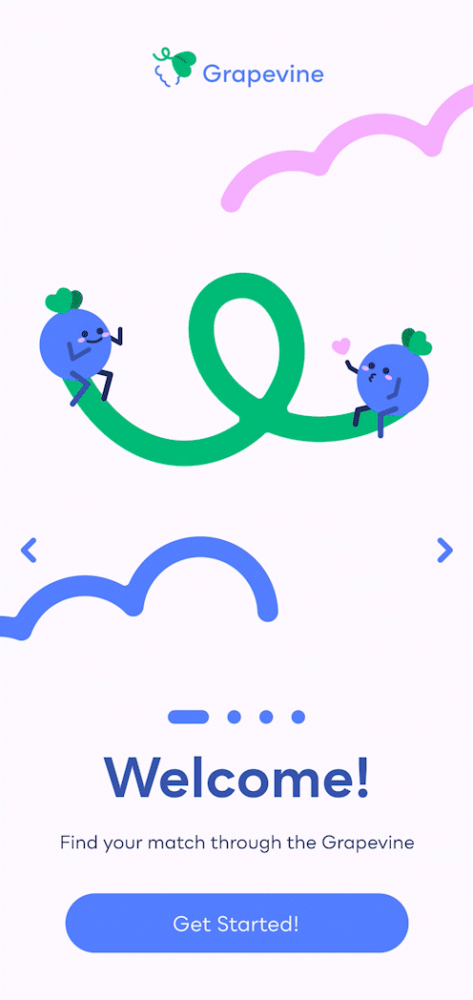
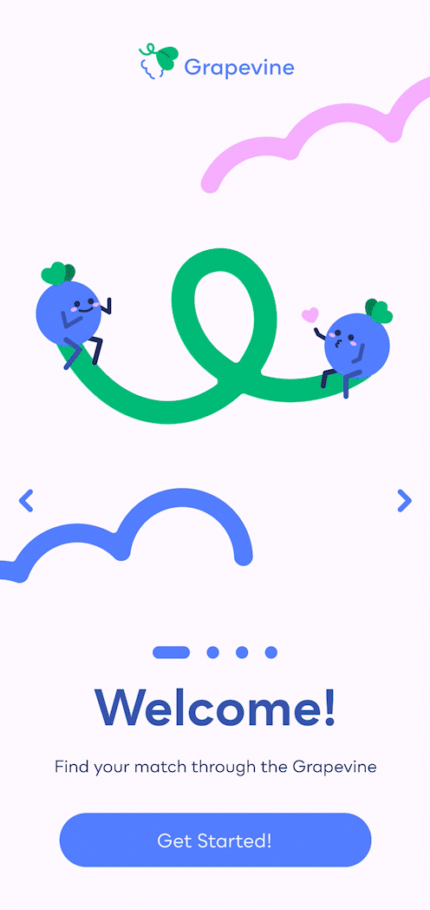

 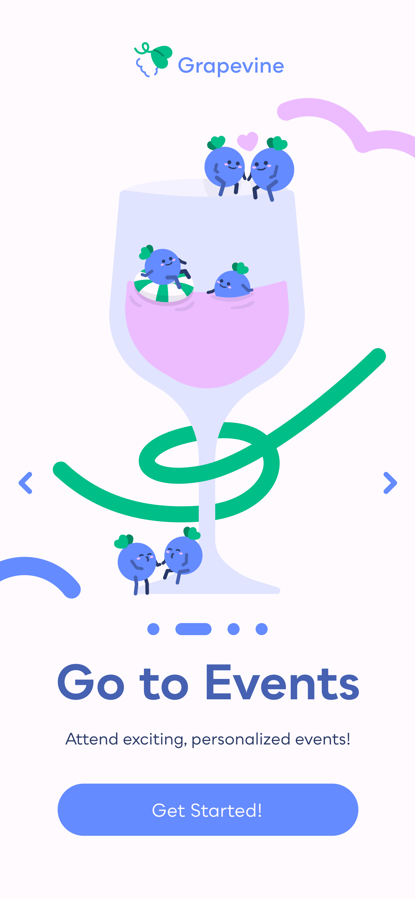
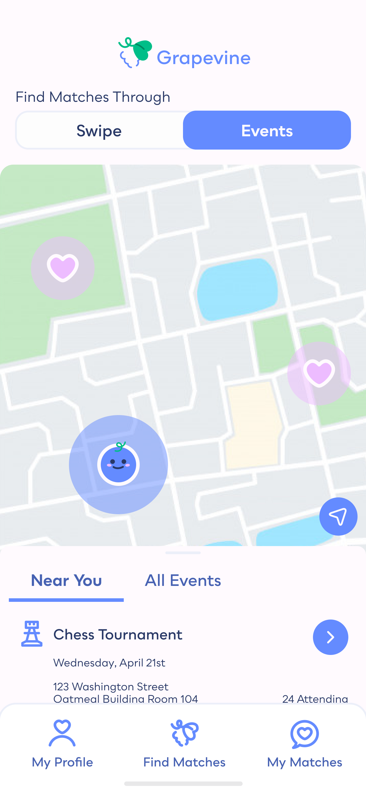
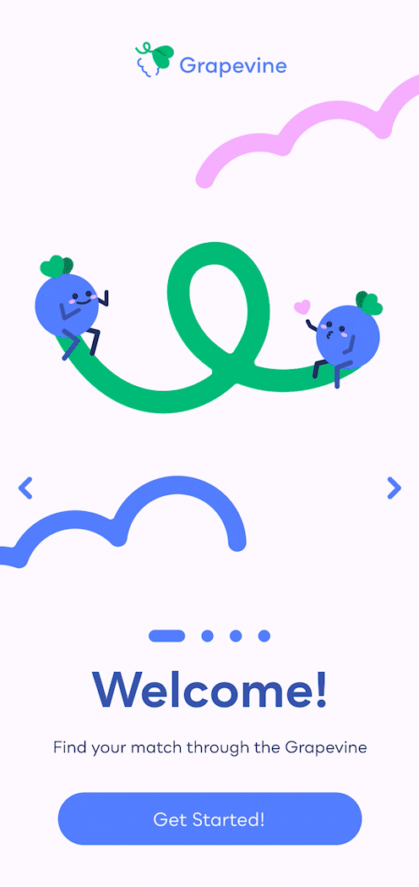
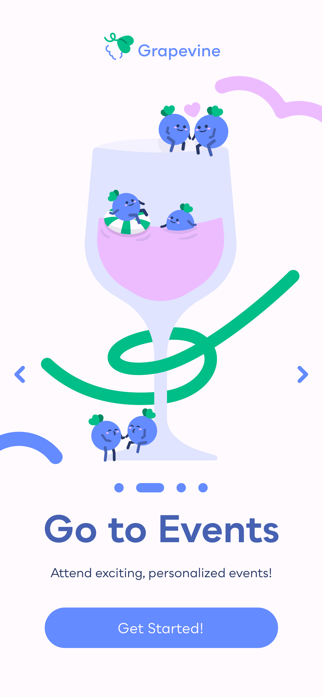
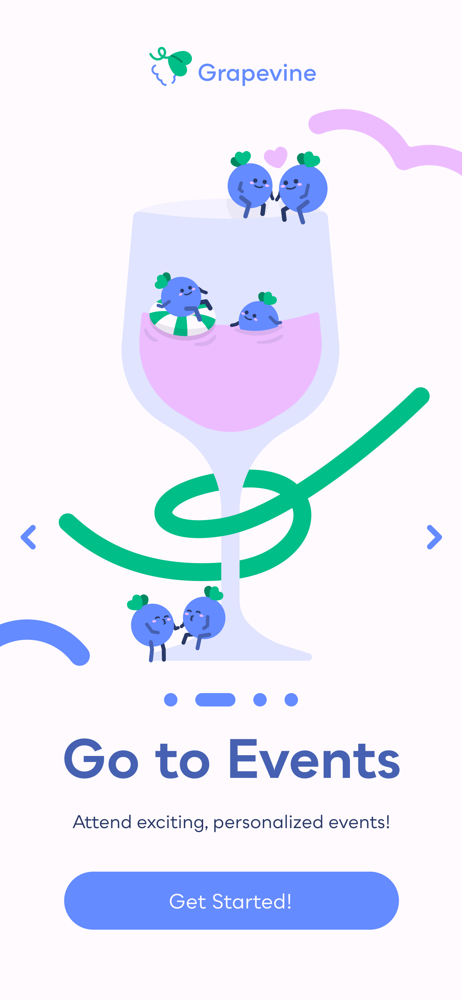
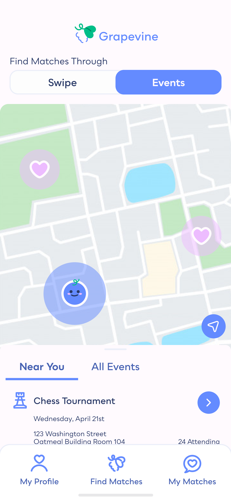
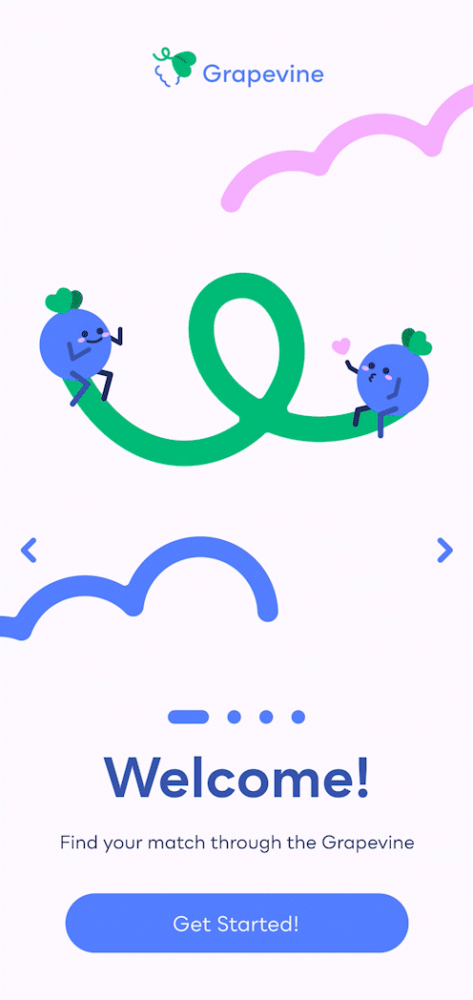
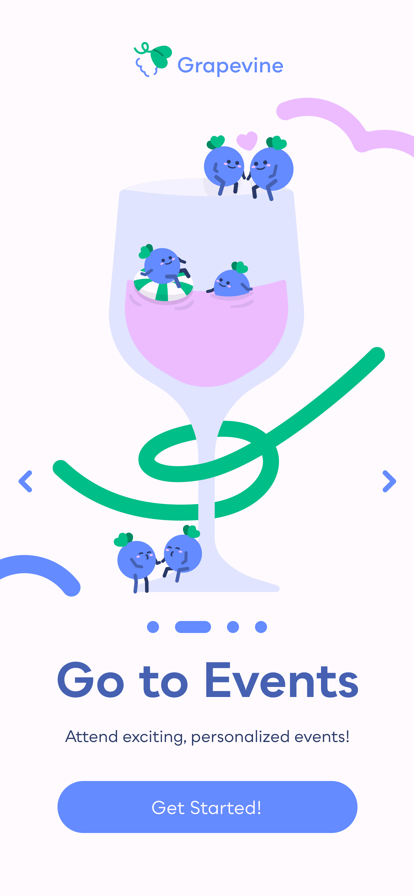
What is Grapevine?
Grapevine is a digital platform designed to combat the prevalent issue of loneliness and social
isolation among adults aged 60 and older. A significant portion of these older adults
state that they deal with social isolation. Grapevine provides a digital space where older
individuals can connect, form meaningful relationships, and combat the negative impacts of
social isolation.
Product Designer
2 Months
Miso Kim - Interaction Design 2 Professor
Loneliness is a prevalent issue among adults aged 60 and older, with 43% reporting feelings of isolation. This condition has been linked to severe health risks including premature mortality, dementia, heart disease, and stroke. The lack of meaningful social interactions can have profound consequences on the overall well-being of this demographic.
Grapevine reimagines dating for older adults, embracing familiar methods like in-person meet-ups, phone conversations, and letter writing. Placing a strong emphasis on safety and trust, Grapevine facilitates new connections for these individuals, broadening their social horizons. This helps to counter the prevelance of loneliness for older generations.
Grapevine is an app for the romantics. This service is catered to people who have been divorced, widowed, or remained single past the age of 50.
During my interviews, many participants noted that they did not like texting people to get to know them. They were used to going to events, calling, and even writing letters to find the people they loved. In order to make the population I was looking to serve more comfortable, I felt it was important to emphasis all these methods from the get-go. Each of these features is at the forefront of the onboarding sequence to let older romantics know that I hear them.


Oftentimes, older populations have a difficult time with technology. By
allowing
them to utilize the sign up method of their choice, phone number, Google Gmail, or Facebook (which
many
older people are familiar with), older romantics will feel more comfortable signing up for
Grapevine.
Through having my audience focus on one action per page, they will better understand what
they
need to do at each point of the sign-up flow.
Vinny and Viney Intro
Vinny and Viney, the mascots of Grapevine, are grapes looking to personally help older romantics find love. It is their goal and what they were created to do. By making the app feel less like a robot and more like a friend, it personifies the app and makes older generations who do not like tech feel more connected to the product.
Some of the most important information Grapevine needs is your name, your age, and your dating preferences. Through establishing Vinny and Viney as a friendly presence, customers are more comfortable sharing about themselves. They are a presence that is physically there, asking you questions as you onboard. When you onboard with Grapevine, you're not just handing over your personal information to a faceless company, you're giving it to Vinny and Viney too.
Profile Setup
Profile Setup Continued
Finish Profile
After finishing setting up their initial profile, Vinny and Viney push the "Finish Profile" button to remind the audience to continue onto the app. This touch of playfulness is to reinforce this sense of friendship. These touches are present throughout the app.
While looking at someone's profile on other dating apps, often the most importance is put on what the
person looks like. With Grapevine, romantics can add in their interests and even photos of their
pets or favorite artists. This helps romantics get to know each other better and show off who they
really are. Vinny and Viney also encourage romantics to match with one another once they reach the
bottom of a profile. If you read through all that, might as well shoot your shot!
Interest icons by ByteDance

Profile Setup

Interests
When someone decides they like another person, they can match with them if the other person agrees they would also like to match. Vinny and Viney encourage them by telling them that they've found their "Perfect Pair."
Together, matches can decide to go to events together. This replicates dating of the past as oftentimes, individuals would meet in person. These events are user proposed as well as generated by the app itself. Oftentimes, it's difficult to make all the plans yourself, having the app take some of the tasks off the romantic's hands will help to encourage customers to put themselves out there.


Growing up with the internet, chatting with strangers online seemed pretty regular to me. However, through my interviews, I learned that many people older than me have an entirely different perspective. I thought that that was interesting, specially as it meant I needed to ensure their comfort with something I took for granted. One strategy was to prioritize events alongside swiping. In hindsight, I realize there was room for even more emphasis on events. I think this would have made them even more comfortable.
When it came to creating an online experience for an older audience, I knew that accessibility was extremely important. Many older individuals may face challenges with small fonts and unclear interactive elements. Therefore, I made it a priority to ensure that the font size never dropped below 16px and that interactive areas were distinctly delineated for easy navigation. Crit from my friends and teachers helped a lot with this as many of them could point out problem areas I hadn't seen.
For Grapevine, I knew it was something I wanted to return to or potentially build out more in the future. Therefore, I decided to create documentation explaining all of my choices. This way, I would have a comprehensive blueprint that could guide new iterations or potentially even the pickup of the project by others. Through creating the documentation, I looked at a lot of other style documentation books and learned about what is important to be included.